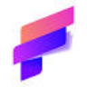

МолекулаАгрегаторы нейросетей
Молекула объединяет модели для текстов, изображений, видео и музыки. В одном аккаунте можно подобрать инструмент под этап работы, сохранить инструкции проекта и использовать готовые роли.
К задаче в МолекулеРаздел «Веб-дизайн»: варианты ИИ для этой задачи, описания возможностей и переходы к обзорам. Сравните несколько решений на одинаковом примере.
Подготовьте схему страницы записи на ремонт велосипеда перед разработкой сайта. Передайте перечень услуг, порядок обращения и известные ограничения; получите последовательность блоков и тексты кнопок, которые можно обсудить с дизайнером и разработчиком без обещания готового запуска.
Предложи структуру страницы веломастерской: виды ремонта, как описать поломку, адрес и запись. Укажи порядок блоков и понятные кнопки, не добавляй неизвестные цены, сроки и обещания устранить любую поломку.
Молекула объединяет модели для текстов, изображений, видео и музыки. В одном аккаунте можно подобрать инструмент под этап работы, сохранить инструкции проекта и использовать готовые роли.
К задаче в МолекулеСравнивать «evolv AI» с другими инструментами раздела «Веб-дизайн» удобнее на одинаковом исходном материале.
Сравнивать «Magify.Design» с другими инструментами раздела «Конструкторы сайтов и лендингов» удобнее на одинаковом исходном материале.
SketchGPT превращает загруженный эскиз продукта в варианты визуального оформления. Инструмент добавляет тени и объём, сохраняя нейтральный фон для представления предмета. Пользователь может рассматривать разные темы изображения, чтобы увидеть, как исходный рисунок выглядит после выбранной обработки и изменения визуальной подачи.
Сравнивать «tldraw» с другими инструментами раздела «Дизайн» удобнее на одинаковом исходном материале.
Для «v0.dev by Vercel Labs» сначала определите свою задачу и требуемый результат. Карточка относится к направлению «Разработка».
«Weblium» помогает собрать сайт или веб-приложение.
«Aida» помогает собрать сайт или веб-приложение.
«Dora» работает с графическими задачами дизайна.

Locofy.ai используют для задачи: писать и изменять программный код. Ещё одно направление работы: создавать основу сайта или приложения.
«Palet Design» помогает собрать сайт или веб-приложение.
«Unicody» помогает собрать сайт или веб-приложение.
«Butternut» помогает с задачами поискового продвижения.
Для «LoremGenie for Figma» сначала определите свою задачу и требуемый результат. Карточка относится к направлению «Дизайн».
Сравнивать «DesignBuddy.net» с другими инструментами раздела «Дизайн» удобнее на одинаковом исходном материале.
Для «Zarla Website Builder» сначала определите свою задачу и требуемый результат. Карточка относится к направлению «No-code и Low-code платформы».
«Designly AI» помогает с задачами поискового продвижения.
Figma AI рассматривают при подготовке интерфейсных макетов в Figma. Доступность конкретных режимов нужно проверить в аккаунте; результат оценивают по реальным сценариям пользователя.
Lunacy предоставляет программную среду дизайна со встроенной графикой и автоматической компоновкой. В продукте есть импорт из Figma и удаление фона, а также ИИ-инструменты. Автономные функции и форум сообщества дополняют подготовку визуальных материалов и работу пользователя с выбранным дизайн-проектом.
Сравнивать «Wegic - Website builder» с другими инструментами раздела «Конструкторы сайтов и лендингов» удобнее на одинаковом исходном материале.
«Nyx» готовит визуальные материалы по заданию.
Для «Shuffle» сначала определите свою задачу и требуемый результат. Карточка относится к направлению «Дизайн».
Для «Thread» сначала определите свою задачу и требуемый результат. Карточка относится к направлению «No-code и Low-code платформы».
«DesignCode UI» представлен в разделе «Дизайн». При выборе проверьте нужную операцию и условия работы с результатом.

Framer AI помогает создавать и менять страницы сайта по описанию. Результат редактируется на холсте; перед публикацией нужно проверить содержание, адаптивность и действия посетителя.
«STUDIO» помогает собрать сайт или веб-приложение.
Mermaid Chart помогает создавать диаграммы с использованием текстового кода в окружении Markdown. Для работы предусмотрены визуальный редактор и одновременное участие команды. Инструмент связывает описание схемы с её наглядным представлением, позволяя обсуждать и редактировать проектные диаграммы в общей рабочей среде.
«ApplyDesign» представлен в разделе «Дизайн». При выборе проверьте нужную операцию и условия работы с результатом.

Relume используют, чтобы создавать основу сайта или приложения. Ещё одно направление работы: готовить текст по теме и требованиям к содержанию.

Uizard помогает проектировать интерфейсы приложений и сайтов с участием ИИ. Работа включает каркасные схемы, экранные макеты и прототипы, которые можно обсуждать совместно. Инструмент предназначен для согласования интерфейсных идей между дизайнерами, разработчиками и участниками продуктовой команды до реализации самого приложения.
Сравнивать «Magician for Figma» с другими инструментами раздела «Дизайн» удобнее на одинаковом исходном материале.
Сравнивать «PageGPT» с другими инструментами раздела «Дизайн» удобнее на одинаковом исходном материале.
«Woodle» помогает собрать сайт или веб-приложение.
Сравнивать «Gradient Generator» с другими инструментами раздела «Дизайн» удобнее на одинаковом исходном материале.
«Pagic» помогает собрать сайт или веб-приложение.

Для «Folio» сначала определите свою задачу и требуемый результат. Карточка относится к направлению «Дизайн».
Galileo AI помогает создавать дизайн по словесному заданию. Предусмотрены редактирование сложных пользовательских интерфейсов и подготовка иллюстраций под замысел дизайнера. Инструмент связывает описание обычным языком с визуальной разработкой, позволяя перейти от формулировки идеи к макету и его дальнейшим изменениям.
Сравнивать «Piggy To» с другими инструментами раздела «Конструкторы сайтов и лендингов» удобнее на одинаковом исходном материале.
Сравнивать «uKit AI» с другими инструментами раздела «Разработка» удобнее на одинаковом исходном материале.
Страница 1 из 1